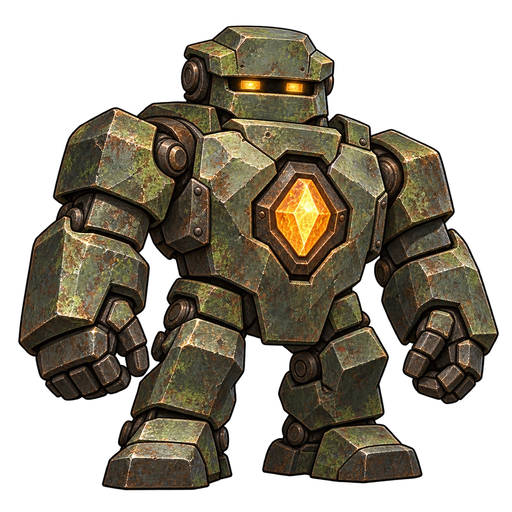

灯帰りの迷宮 / 制作ツール
音・戦闘演出の編集
戦闘で確認
記述形式
種類
合成音
粒子
軌道・残像
組み合わせ
プリセット
PREVIEW
攻撃側

対象
▶ 再生
停止
再生対象
音と映像
音のみ
映像のみ
動き
通常
控える
切
音量
材質
重ねない
肉体
金属
盾
石
木
水
左右
距離
波形は再生後に表示します。
現在をAに保持
Aを再生
B（編集中）を再生
Aを編集へ戻す
読み込み中…
選択項目の設定
変更後に再生
詳細設定
音量・音程の曲線、音色加工、粒子の動き、開始時刻などを編集できます。適用時に値と参照を検査します。
設定を適用
適用済みに戻す
共通定義全体 / JSONの読込・書出
全体の定義
全体を適用
JSONを書き出す
JSONを読み込む